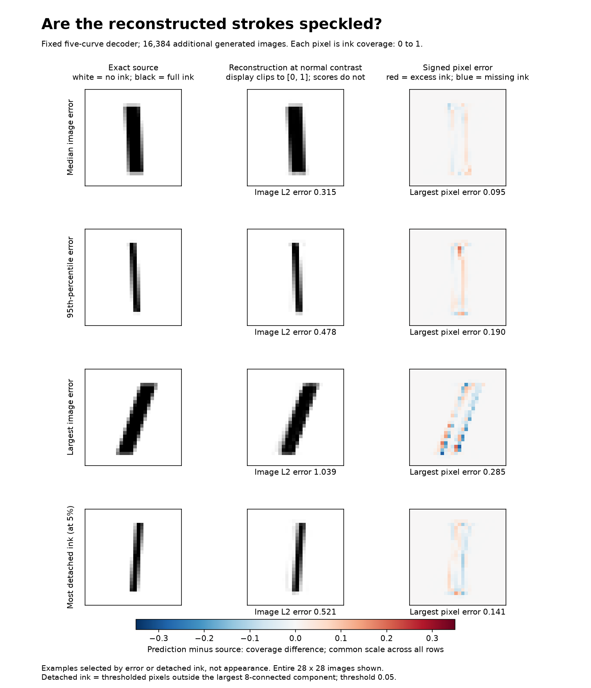
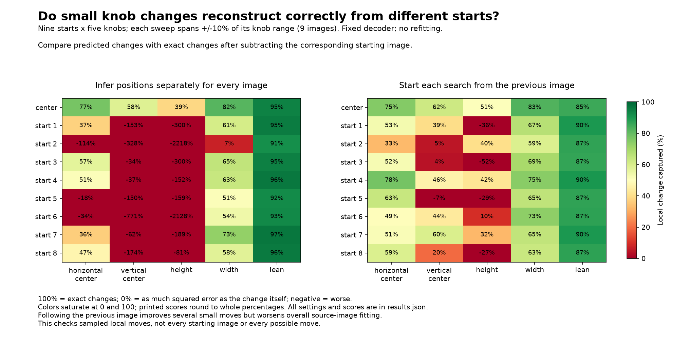

Understand the decoder and clipping scores
Joint fit · Direct knob construction · Full measurements
The model stays fixed throughout this audit. Coordinates are inferred from each source image's pixels; no stroke-rendering equation appears in the decoder. Scores use raw predictions without clipping.
Prediction = intercept + C1(t1) + C2(t2) + C3(t3) + C4(t4) + C5(t5). Each position t can depend on all five knobs through the source pixels. Changing width from another lean angle can select different positions on several curves. The additive restriction in curve coordinates does not imply additivity in physical knob values.
The original fitting cloud captures 99.7336%; these 16,384 additional images capture 99.4661%. Mean pixel RMS error is 0.0120 coverage; maximum pixel error is 0.349. The global variance denominator is distance from the overall image mean; no zero-pixel dilution is used in this score.

There are faint artifacts. At a 0.05 coverage threshold, 1.28% of images contain ink detached from the largest component, averaging 0.015 detached pixels per image. At 0.01 coverage, the corresponding fraction is 23.56%. Pixel errors and out-of-range excursions remain real even when a normal-contrast display makes them hard to see.
Previous checks included 16,384 additional joint states, 2,048 joint midpoints, and all 32 corners. This new check sweeps each physical knob around nine starting strokes; each local move is compared with its own reconstructed starting image. All five curve coordinates are re-inferred for each image.

| Knob | Lowest local change capture | Highest |
|---|---|---|
| cx | -114.3% | 77.0% |
| cy | -770.6% | 58.2% |
| height | -2218.5% | 38.6% |
| width | 7.2% | 81.7% |
| lean | 91.5% | 96.6% |
A high global score does not establish accurate small moves: local changes have much smaller variance. This audit does not certify global optimality, continuity of inferred coordinates, exact validity of reconstructed strokes, or validity of arbitrary curve-coordinate combinations.
Additional continuation check: initialize each next image from the previous image's coordinates along each sweep. Its results are stored per sweep as continuation_change_capture_percent in results.json. This improves the small width, height, and position changes substantially. Local height change capture still ranges from -52% to 51%, and vertical position from -7% to 62%. Overall source-image capture drops from 99.4133% to 98.9750%. This reduces restarts but does not establish a globally optimal inverse.
On the 16,384 additional images, sequential projection alone captures 99.1184%; selecting the better of that and a nearest-covering-image coordinate initialization captures 99.4661%. The 99.7336% fitting-cloud score uses stored fitted coordinates. Curve positions are optimized separately for each source image; this is reconstruction from known pixels, not direct generation from requested knobs.